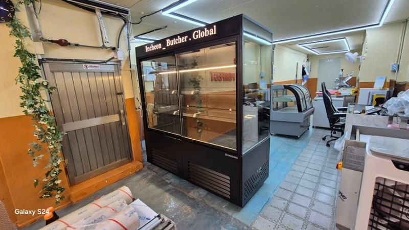
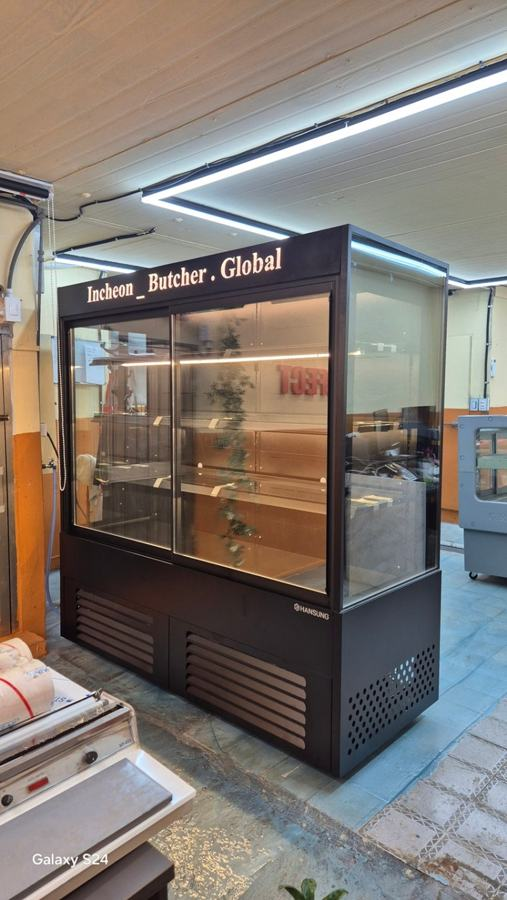
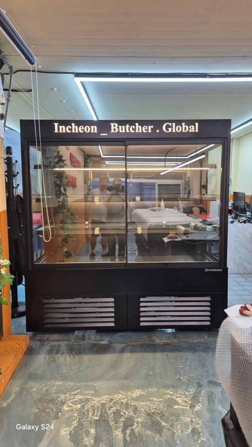
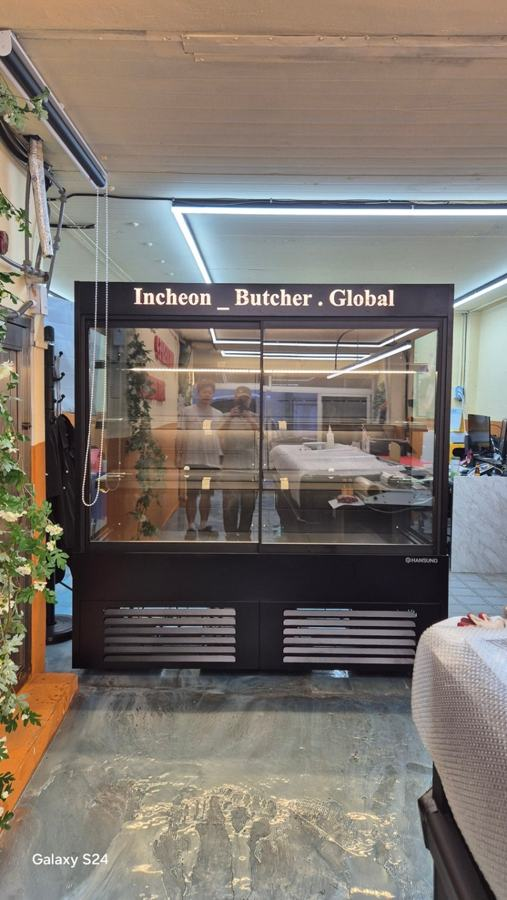
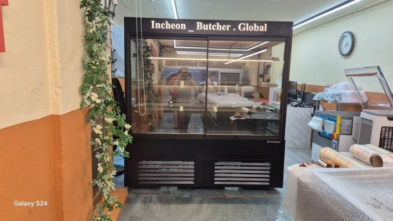

쇼케이스 이용 및 관리
정육쇼케이스 일반냉장고 차이, 보관과 진열은 다른 일입니다

일반 냉장고는 문을 닫아 두고 고기를 보관하는 장비이고, 정육쇼케이스는 손님에게 고기를 보여 주면서 색과 신선도를 지키는 장비입니다. 손님 앞 진열대는 냉기가 고르게 돌고 결로와 조명까지 관리되는 정육쇼케이스를, 손님이 보지 않는 보관 공간은 일반 냉장고를 쓰는 식으로 역할을 나누시면 됩니다.
안녕하세요. 정육점과 식육식당의 고기 진열 냉장고를 설계하고 만드는 한성쇼케이스입니다.
정육점 창업 비용을 계산하다 보면 "투명한 문 달린 업소용 냉장고에 고기를 넣어 두면 쇼케이스랑 뭐가 다르지?"라는 생각이 드실 수 있습니다.
실제로 그렇게 시작하셨다가 상담을 주시는 사장님도 계십니다.
고기를 차갑게 지킨다는 점은 같지만, 정육쇼케이스는 손님이 서서 고기 색을 보고 고르는 순간까지 책임지는 장비입니다.
그래서 냉기를 돌리는 방식부터 유리, 조명, 문 위치까지 설계가 달라집니다.
오늘은 정육쇼케이스와 일반냉장고가 실제로 어디서 다른지, 그리고 매장 안에서 두 장비를 어떻게 나눠 쓰면 좋은지 정리해 드리겠습니다.
1. 냉기가 도는 방식
일반 냉장고는 문을 닫아 둔 상태에서 내부 온도를 지키는 데 맞춰져 있습니다. 문을 열면 냉기가 쏟아지고, 다시 닫은 뒤 온도를 회복하는 구조죠.
정육쇼케이스는 진열 칸 앞뒤로 냉기를 고르게 돌려 특정 지점만 차갑거나 따뜻하지 않도록 설계합니다. 고기는 몇 도만 흔들려도 색이 변하고 육즙이 빠지기 쉬워, 진열 칸 전체가 고른 온도를 유지하는 게 핵심입니다.
디지털 컨트롤러로 온도를 세밀하게 맞추는 것도 이 때문입니다.
2. 유리와 결로 관리
일반 냉장고의 유리문은 안이 보이기만 하면 되지만, 정육쇼케이스의 유리는 고기 색을 손님에게 정확히 전달해야 합니다.
페어글라스를 써서 바깥 공기와 차단하고, 유리 안쪽이나 모서리에 결로가 생기지 않게 관리합니다.
유리에 물방울이 맺히면 고기가 흐려 보이고, 손님은 신선하지 않다고 느낍니다. 정육점은 손님이 유리 앞에 오래 서서 고르는 업종이라 이 차이가 매출로 이어집니다.
- 진열용이라면 페어글라스 여부를 확인하세요.
- 유리 모서리에 결로 흔적이 없는지 보세요.


3. 조명이 하는 일
정육점 쇼케이스에 핑크색 조명을 많이 쓰는 데는 이유가 있습니다. 고기의 붉은빛을 더 신선하고 먹음직스럽게 보이게 하고, 붉은색을 오래 볼 때 남는 초록 잔상 때문에 고기가 덜 신선해 보이는 현상도 줄여 줍니다.
일반 냉장고 조명은 안을 밝히는 용도라 색감까지 고려하지 않습니다. 시간이 지나 조명이 변색되면 고기를 탁하게 비추니, 진열용 장비라면 조명 상태도 꾸준히 확인해 주세요.
4. 형태와 작업 동선
정육쇼케이스는 손님이 위에서 내려다보는 평대형, 여러 단으로 포장육을 진열하는 오픈 다단형처럼 판매 방식에 맞는 형태가 있습니다.
사장님은 뒤에서 꺼내고 손님은 앞에서 보는 구조라, 작업대와 저울 위치까지 맞춰 설계합니다.
일반 냉장고는 매장 뒤편 보관용으로 쓰기 좋습니다. 손님 앞 진열은 정육쇼케이스, 손질 전 원육과 여분 재고는 일반 냉장고에 두는 식으로 나누면 두 장비 모두 제 역할을 합니다.
- 손님 앞 진열과 뒤편 보관 공간을 구분해 보세요.
- 작업대와 저울 위치를 함께 정하세요.
체크리스트
- 진열 칸 전체의 온도 균일성
- 디지털 컨트롤러 여부
- 페어글라스와 결로 관리
- 고기 색을 살리는 조명과 변색 여부
- 평대형·다단형 등 판매 방식에 맞는 형태
- 보관용 일반 냉장고와 역할 분리
현장에서 자주 보는 경우: 들여놓고 나니 고기가 하루 만에 변색될 때
겉으로는 멀쩡해 보이는 냉장 장비를 들였는데, 매장에 놓고 나니 냉각이 고르지 않거나 진열한 고기가 하루 사이에 색이 변해 난감하다는 상담을 자주 받습니다.
정육은 작은 기능 차이가 신선도와 판매로 바로 이어지는 상품이라 이런 일이 더 크게 느껴지죠.
이럴 때 저희가 먼저 보는 곳은 네 군데입니다. 특정 지점만 차갑거나 따뜻하지 않은지, 디지털 컨트롤러로 온도를 제어하는지, 부하가 걸릴 때 콤프레셔 소음이 커지지 않는지, 내부 팬과 통풍판이 균형 있게 유지되는지입니다.
여기에 청소가 불편하거나 문 방향이 매장 동선과 맞지 않는 구조라면, 결국 다시 장비를 고민하게 되는 경우가 많습니다.






| 기준 | 확인 포인트 |
|---|---|
| 냉기 발산 | 특정 지점만 차갑거나 따뜻하지 않은지 |
| 온도 제어 | 디지털 컨트롤러 탑재 여부 |
| 콤프레샤 | 부하 시 소음 증가 여부 |
| 내부 구성 | 팬·통풍판의 상태가 균형 있게 유지되는지 |
자주 묻는 질문
작은 정육점인데 일반 냉장고로 시작하면 안 될까요?
손님이 고기를 직접 보고 고르는 구조라면 진열 칸만큼은 정육쇼케이스를 권해 드립니다. 보관용은 일반 냉장고로 두고, 진열 길이를 줄여 시작하는 방법도 있습니다.
정육쇼케이스 조명은 꼭 핑크색이어야 하나요?
고기 색을 살리는 데 많이 쓰는 색이지만, 매장 콘셉트에 따라 백색과 함께 쓰거나 구역별로 나누기도 합니다.
부위 구성과 인테리어를 보고 함께 정하시면 됩니다.
식육식당도 정육쇼케이스가 필요한가요?
손님이 고기를 보고 고르는 방식이라면 진열 효과가 큽니다. 메뉴판으로 주문받는 구조라면 주방 보관용 냉장고 위주로 구성하셔도 됩니다.
매장 조건에 맞춰 만드는 한성쇼케이스
원하시는 제품 사진과 설치할 공간 사진만 보내 주셔도 매장에 맞는 구성을 추천해 드립니다.
- 전국 240여 개 A/S 전담 센터 운영
- 본사 대량 자재 매입으로 품질 대비 합리적인 가격
- 유럽제·삼성 냉각 콤프레셔 적용
- 국내 최초 쇼케이스 전문 디자이너 상주
매장 폭과 원하는 진열 구성을 알려 주세요. 실측과 견적을 안내해 드립니다.
031-986-2458